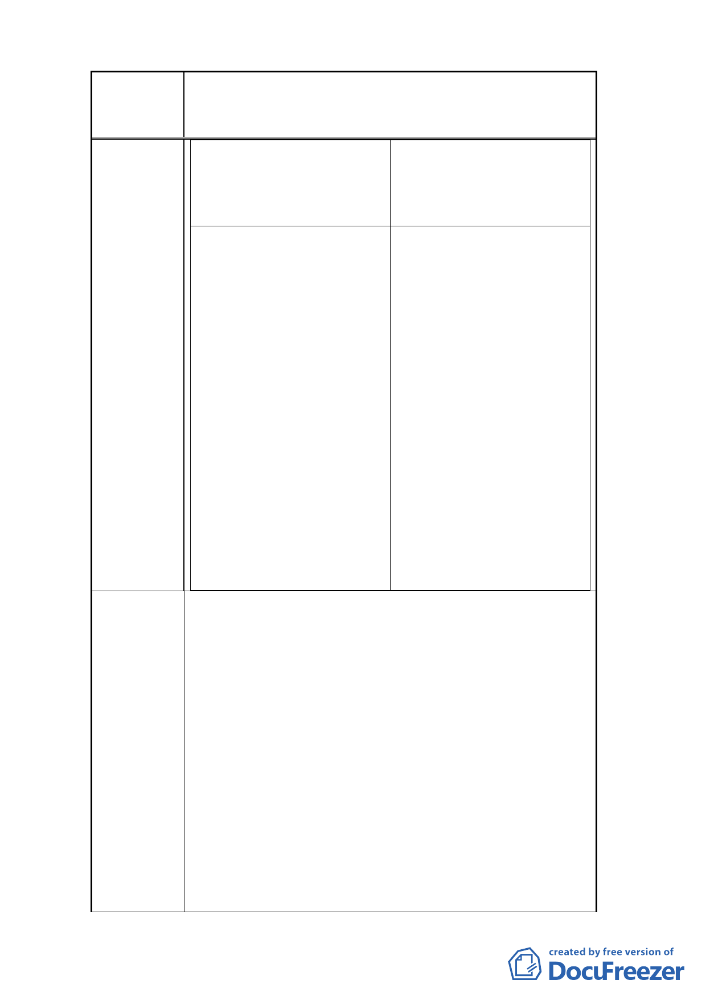

案名
建議辦法
一
變更臺北市南港車站特定專用區部分特定商業區及
部分體育場用地為道路用地暨修訂土地使用管制規
定計畫案
2.三樓以上每層以 4.0 公尺作 2.三樓以上每層以 4.0 公尺作設
設計時，其高度需求為 23 層 計時，其高度需求為 21 層×
×4.0 公尺＝92.0 公尺，所以合 4.0 公尺＝84.0 公尺，所以合
計 107.0 公尺
計 99.0 公尺
五、綜合分析：
五、綜合分析：
1.以建蔽率 40％，高度限制 80 1.建蔽率若為 60％時方可留設
公尺規劃之規畫二層商業基 合 理 且必 要 之公共設 施空
座 建 築 量 體 之 公共設 施 空 間，適當規劃合理的商業基
間，在限制建築物高度 15 公 座空間使用需求，且經核算
尺以上部份連續牆面線不得 其建築總高度需求亦較低，
大於 65 公尺及建築物棟距不 但仍大於 80 公尺之限制條
得小於 20 公尺的規定下，因 件；所以如能放寬本計畫建
40﹪之建蔽率過低，實難以 築物高度限制至「以不超過
適當規劃合理的商業基座空 110 公尺為原則」，確有其必
間使用需求，前已敘明；現 要。
經核算在高度 80 公尺限制
下，將無法有效完全使用允
建之總容積樓地板面積，故
陳情放寬本計畫之建築物高
度限制至「以不超過 110 公
尺為原則」。
依原計畫 92 年 12 月 31 日府都二字第 09228455700
號公告之「擬訂台北市南港車站特定專用區細部計畫
案」之土地使用分區管制規定，建議市府維持原訂特
定專用區﹙A﹚建蔽率 60﹪之規定，以滿足商業建築
規劃建築底座設計時，需留設合理且必要之公共設施
空間為符合商用土地使用；並建議考量依都市 A 級
商業大樓規劃之趨勢與實際需求及對照本基地周邊
之南港機廠新開發案建築量體高度規模，再放寬本計
畫 建 築 物 高 度 限 制 至 ” 以 不 超 過 110 公 尺 為 原
則”，將原建築物高度限制 80 公尺之條件再予提
高，實有助於增進都市天際線之高低變化，在建築物
棟距 20 公尺之規範下，亦有利於整體視覺穿透性及
山景的開放度；本計畫因位處南港車站對面，合理的
建築物高度放寬與棟距要求將有助於提昇該區域之
都市與建築景觀特性；再者在新增之連續牆面長度之
9